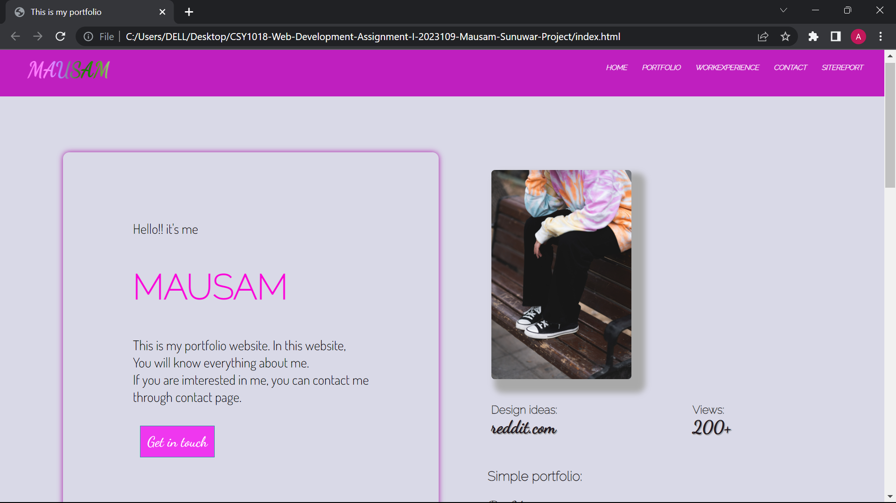

my progress


This portfolio website was assigned by UON(University of Northampton) to all their students to see what students have learned. In this website we were assigned to make a personal portfolio of oneself, which will assist students in understanding the basics of web development. To make this website students had to use thier knowledge that they learned until now. And sure enough students also got to showcase their skills in fair manner with their peers. Many students made website without some difficulty but there were some students who struggled to make a website for themselves, because of various reasons that occur in person's daily schedule. although this assignment had some requirements, we still were able to play with various html and css properties that help us to explore more about web development. thaks to that, we were able to experience a valuable lesson that we will face in the future.
With my experience web developing is really fun and awesome thing to learn. Because developing website made me proud of myself that I can do such things, only imagined of at childtime. Now that i have learned and used it in reality it feels amazing and I like it. at first, learning it was easy but when doing practically it was incomparably difficult and time consuming. Moreover developing a site from scratch was not as easy as I thought it would be. So, I had to invest my time learning more about basics of html and css from youtube, w3schools and many other sites. And as expected, when other proffessional programmer did coding it was easy but as soon as I start to code there was always error or small mistakes. In addition to that, small error will ruined your layout completly. As time goes by I started to get used to making mistakes but this time I knew where I was mistaken so it was not hard this time. Like that, my site appeareance started look good.
As for designing a website, I searched into various inspirational site but got confused. because all the website were very flashy and complicated that I wondered how did he make it and we had yet to learn javascript so it was very controversial. After that, I looked into youtube and found some clue about how to design my layout with html and css (no javascript). My designing sense improved from that point and thats how I learned designing.
In this module, we learned about how to develop website and it's design including colors ,layouts properties etc. This module was very exciting and fun to attend likewise it was more fun to develop our own portfolio website. All the students and module leader were very hardworkimg and sincere although module leader could not help all the students because of limited time students themselves grouped and helped each other.overall This module was gainfull and valuable.
Actualy it was block and block type at first but after visiting few websites in the internet a found some interesting design and from youtube also.
But the fact that I was influenced by other's design bothered me so, I modified the website design again and again until it was good enogh to satisfy me.Thats how
This website was designed.
Here are the links to websites that I was influenced from
Link 1
link 2
I didn't thought much about color when I started making websites but later because of my color combination I found that it's looking really unattractives and this website also greyish at first but I changed it into purle. I use purple colour because it suited landing page's image of this website so I decided to use this colour.For contrasting colors I used varient of purple colour.and some other colours.